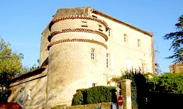
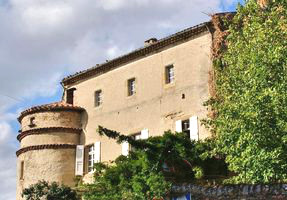
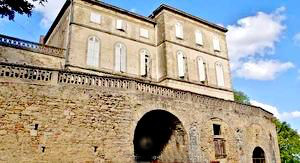
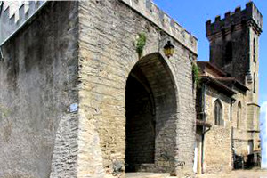
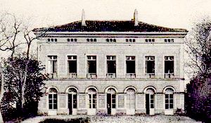
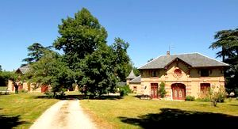

Recensement Jean-Claude Truffet
| Département | 81 — Tarn |
| Canton | Saïx |
| Commune | Viviers les Montagnes |
| Type d'édifice | Château |
| Période d'origine | XVI-XIX |






Cinq châteaux à Viviers les Montagnes dont celui de Viviers du XVI-XIXe siècle, de Groupiac du XIXe siècle, de Troupiac du XIXe siècle, de Sabartarié et de Arifat, (voir article). GROUPIAC, le château a été construit vers 1840 par l'architecte Jean-Pierre Laffon, commandité par Armand de Vergeron, sous-préfet de Castres. TROUPIAC, ce beau château néo-classique fut construit aux alentours de 1840 pour la famille d'Armand de Vergeron, en ce temps-là sous-préfet de Castres. VIVIERS, en 1339, Philippe VI autorise les habitants à se partager les parcelles et fortifier le site. Les remparts comportaient huit tours, constituant une forteresse redoutée du Haut-Languedoc, à la frontière des diocèses de Lavaur et Castres. Plusieurs seigneurs locaux furent tour à tour propriétaires du château, chacun modifiant selon l'époque et le style : tour d'artillerie ou ouverture de fenêtres Renaissance. Le premier château est attesté dans une bulle du pape Clément IV en 1267. Le château sera intégré à la constuction du nouveau fort construit en haut de la bastide, après la signature dun paréage en 1339, entre le Roi Philippe VI de Valois et les co-seigneurs du lieu, les héritiers des Vintrou. Cette Bastide comprenait le fort grand quadrilatère de 100 m de côté avec tours, fossés, deux ponts-levis et la partie basse dite la ville, le tout entouré de murailles. L'édifice appartenait à Antoine de Martin seigneur de Roquecourbe. Il fut avec son fils Antoine lun des chefs du parti catholique de la région. Pendant les Guerres de Religion, Viviers eut à subir quatre sièges de 1565 à 1590. Aux XVIIe et XVIIIe siècles, on perça les murs du château de grandes fenêtres. De 1820 à 1850 de grands travaux de restauration vont donner au château son aspect actuel. Sabartarié pas d'information historique.
Troupiac, le château, rectangulaire de style néoclassique, offre deux façades différentes en raison de la pente du terrain. L'une offre 7 travées de porte-fenêtres donnant sur le jardin. Elles sont surmontées d'autant de grandes fenêtres. De l'autre coté, trois portes et trois lucarnes donnent sur le parc. Au-dessus, sept travées de fenêtres à linteau en arc de cercle et au-dessus, sept autre fenêtres rectangulaires. Des deux côtés, une corniche soutient la toiture et intègre sept séries de trois petites lucarnes éclairant les combles. Ce qui frappe lorsqu'on le découvre c'est son homogénéité, en effet sa façade principale présente sept travées à trois niveaux et l'on retrouve une partie similaire sur la façade sud. Sur un soubassement fait de trois portes s'ouvrent des grandes fenêtres en plein cintre. Viviers, du château initial en fer à cheval, la partie centrale est conservée, avec de larges ouvertures néo-classiques. L'aile orientale a été abaissée ainsi que la tour ronde accolée en contre-bas. Après quatre sièges pendant les guerres de religion, le château est totalement remanié, une parties des sculptures antérieures a été retrouvées lors de fouilles au XIXe siècle et ornent le parc. Au début du XIXe siècle, l'architecte toulousain, Jean-Pierre Laffon agrandit les ouvertures et en fait un château néo-classique sans modifier la structure initiale. Le mur de la cour est supprimé au profit des jardins. Groupiac, le château a été construit vers 1840, s'il est récent ne repose pas sur un château fort médiéval, le site est occupé depuis très longtemps puisque des vestiges souterrains datent de l'époque gallo-romaine, de plan en V , avec deux corps de logis rectangulaire de trois niveaux dont celui de l'arrière terminé par des créneaux, un pavillon carré sur angle à trois niveaux toit en croupe presque plats.
Seigneurs locaux
"
A Viviers les Montagnes dont celui de Viviers , de Groupiac , de Troupiac et de Sabartarié.